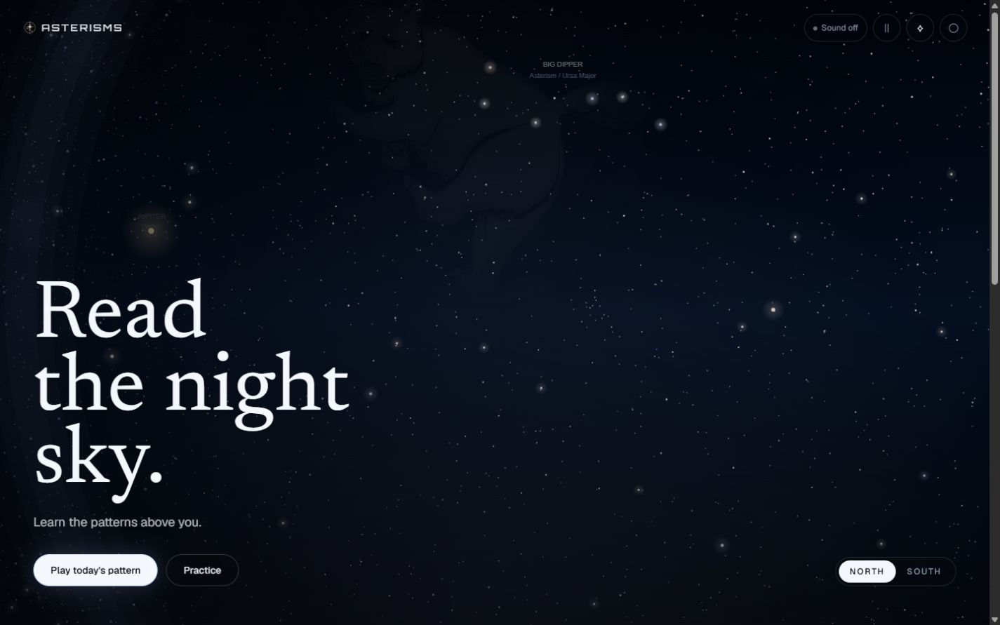
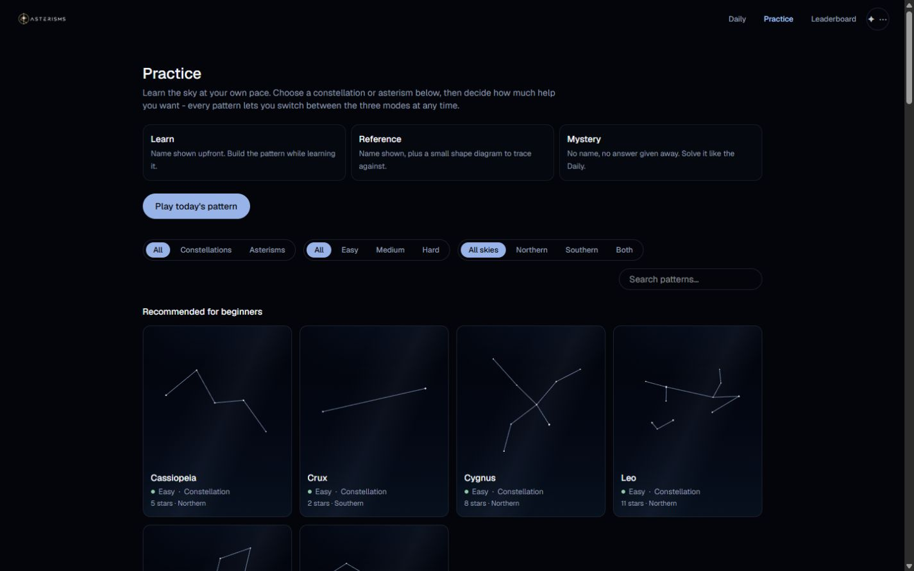
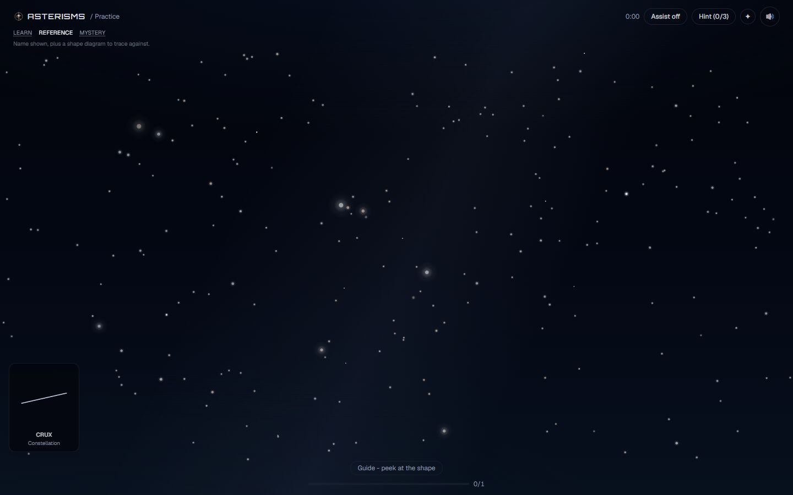
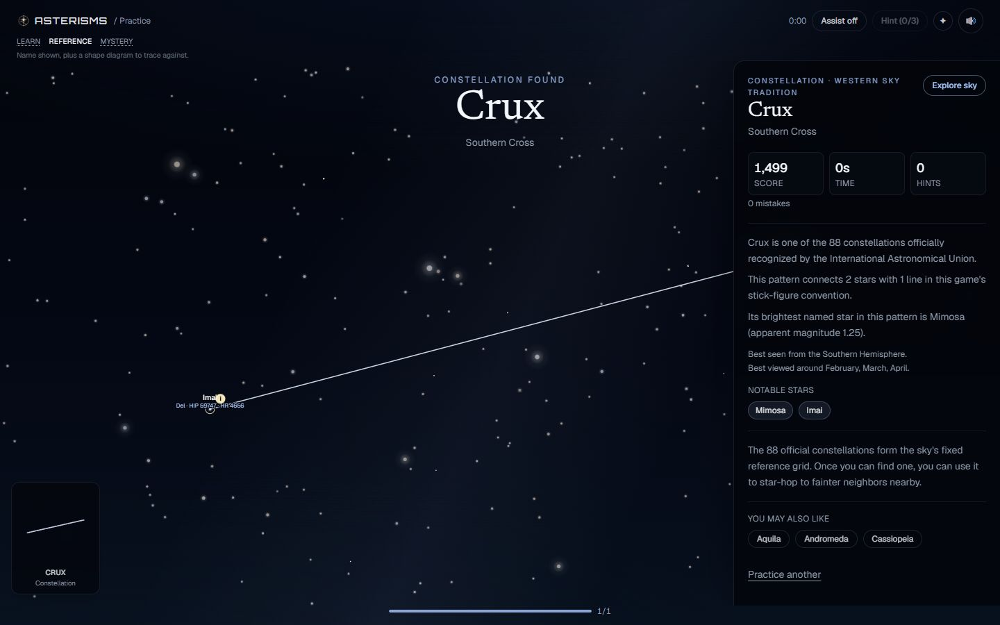
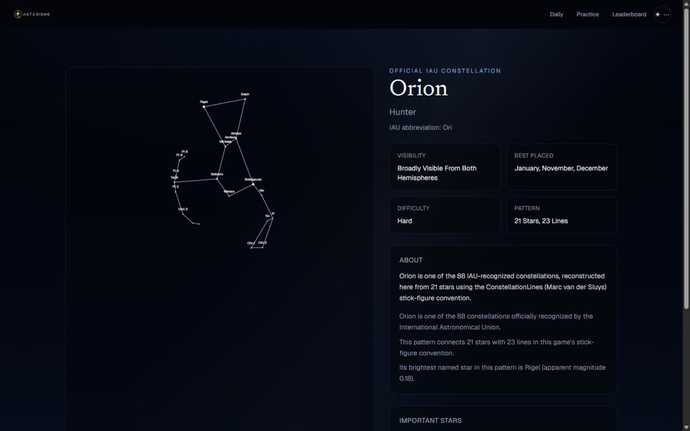
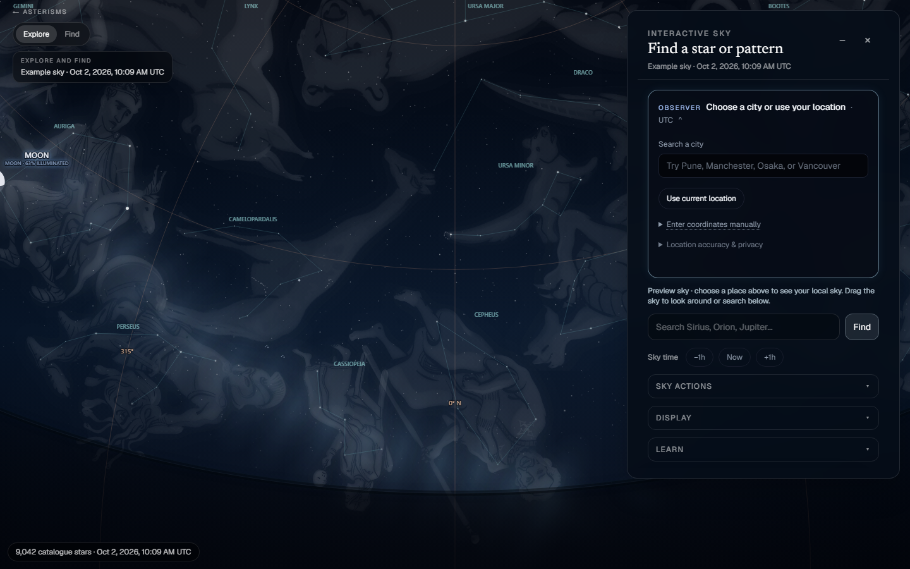
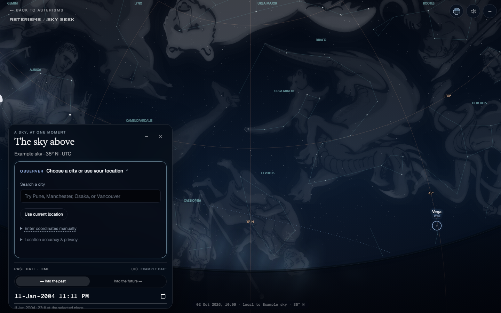
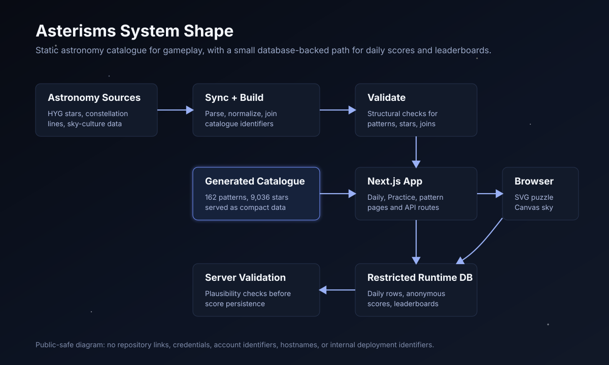

Recruiter-safe case study
Asterisms
A web project for learning to read the night sky: puzzle games on a real star catalogue, and a location-aware sky viewer built on the same engine.

Why I Built It
An existing interest, turned into something I could open too.
I already use apps like Stellarium and I'm genuinely into constellations, asterisms, and the Solar System. I wanted that interest to exist as a product I built myself, not just one I used. Asterisms is solo. It started in early September 2026 as a daily puzzle game, and the real-time, location-based sky viewing I'd planned for a v2 has since shipped (see Real sky below). Working on it also reinforced something simple: there is a lot of good public data sitting around waiting to be turned into an interface people in a given niche actually want to open.
The Product
Learn patterns by solving them.
A player sees a field of stars, infers the hidden pattern, connects the right stars, then gets a reveal with the name, score, notable stars, visibility, and related patterns. Daily mode gives everyone the same UTC-date challenge; Practice mode lets players choose any pattern and switch between Learn, Reference, and Mystery.



What Was Built
Product, data, rendering, API, and quality systems.
Gameplay
Daily and Practice modes share one puzzle engine with hints, scoring, reveal cards, sharing, and a Practice-only assist option.
Astronomy Data
A reproducible sync/build/validation pipeline turns licensed catalogue sources into compact generated JSON used by the app.
Backend
API routes handle daily payloads, reveal payloads, score submission, leaderboards, and health checks. Gameplay remains usable when database-backed features are unavailable.
Rendering
The puzzle uses SVG for accessible, interactive star hit targets; the atmospheric sky uses Canvas for dense decorative rendering.

Real sky
From puzzle to a sky you can actually look up at.
The puzzle catalogue turned out to be a good foundation for a real sky viewer. The same star data and projection code now drive four more surfaces, all computed in the browser from the shipped catalogue with Astronomy Engine.


Tonight
A location-aware stargazing guide. Pick a city from an offline index of 69,750 places, grant device location explicitly, or enter coordinates by hand, and get local-night times, what is above the horizon, Moon and planet positions, and rise/set guidance.
Seek
Choose an observer-local civil time between 1900 and now and the shared renderer recalculates every star, the Moon and the planets for that moment. Repeated daylight-saving times ask which occurrence you mean; skipped clock times are rejected.
Guided Find
Search a star, constellation, asterism, the Moon or a planet and get its real direction and altitude. It starts with manual cardinal guidance and offers an opt-in phone compass dial with app-only calibration.
Events calendar
A location-aware guide to notable eclipses, meteor showers, conjunctions and full Moons, built from an almanac of 3,604 events covering 2025 to 2036.
System
Static catalogue for gameplay, small runtime database path for scores.
The catalogue is built ahead of time and shipped with the app, so the core learning experience does not depend on live database availability. Runtime persistence is limited to daily challenge rows, anonymous score submissions, and leaderboard reads. The real-sky surfaces follow the same rule: positions are computed in the browser, the server only serves catalogue lookups and same-origin city search, and device location is never sent to it.

Engineering Decisions
Interesting choices verified from the codebase.
Astronomy data
Join multiple catalogues instead of drawing shapes by hand.
Problem: constellations and asterisms need recognizable line conventions, but the app also needs real star coordinates and magnitudes. Decision: join line data and sky-culture metadata to HYG stars through catalogue identifiers. Trade-off: the pipeline is more complex, but the runtime catalogue is compact and reproducible.
Projection
Use real RA/Dec with gnomonic projection.
Problem: hand-positioned stars would make the game easier to fake but less meaningful, and the existing star/constellation catalogues are far denser than a browser can render at full scientific detail. Decision: project real celestial coordinates onto a tangent plane, then rotate and scale without distorting the pattern, trimming to what a browser can render smoothly rather than the full catalogue density. Trade-off: projection edge cases and hydration precision needed care - this was the hardest part of the build.
Daily mode
Make the daily challenge deterministic from UTC date.
Problem: everyone should get the same daily puzzle even if the database is temporarily unreachable. Decision: derive the pattern and rotation from the UTC date, using the database only to record and rank scores. Trade-off: this is predictable by design, so spoiler protection remains reasonable-effort.
Learning UX
Separate visual star size from interaction hit targets.
Problem: real stars should render as tiny points, but tiny click targets are frustrating, especially on touch screens. Decision: use restrained magnitude and colour rendering while keeping accessible SVG targets large enough to interact with. Trade-off: visual and interaction geometry have to be managed separately.
Landing experience
Rebuild the North/South hemisphere transition after it broke.
Problem: the cinematic transition between the Northern and Southern sky views was planned from the start, but the first implementation broke rather than blending cleanly. Decision: keep the effect and fix the transition rather than cutting it. Trade-off: extra iteration time on a purely cosmetic piece of the landing hero, for one of its more memorable moments.
Location privacy
Never send or store a precise location.
Problem: a stargazing guide needs an observer position, and a precise one is sensitive. Decision: device and manually entered coordinates live only in session memory, never in local storage, analytics or application servers; shared links carry a city ID, time, target and camera angle, but never coordinates. Trade-off: a link cannot reproduce a custom GPS position, and city locations are approximate centers.
Honest visibility
Call it geometric, and define what "visible" means.
Problem: "above the horizon" is easy to mistake for "you can see it tonight". Decision: the UI describes geometric horizon visibility only, a pattern counts as visible when at least 80% of its stars are above the horizon, and the copy never implies clear weather or dark skies. Trade-off: the guide is less flashy than one that promises a good view.
Historical sky
Bound history to 1900 and treat clock time as hard.
Problem: a sky for a past date is only as good as the time conversion and the catalogue's motion data. Decision: Seek works in observer-local civil time from 1900 onward, applies proper motion, makes the user resolve repeated daylight-saving times, and rejects clock times that never existed. Trade-off: no pre-1900 skies, rather than a confident answer that is quietly wrong.
Data + Astronomy
Verified catalogue characteristics.
Sources and provenance
The current build uses ConstellationLines for official constellation stick-figure conventions, HYG v4.1 for star positions and stellar properties, Stellarium's Western sky culture for asterism conventions and names, a curated subset of compatible constellation artwork, Astronomy Engine for Solar System positions and local rise/set times, and GeoNames (cities5000, CC BY 4.0) for the offline city index.
The app does not claim to be a professional astronomy simulator. It uses real data for a learning-focused game and documents known content gaps.
Reliability + Quality
Current validation status.
Figures on this page were verified on 2 October 2026 from the project's latest passing CI run, its generated data report and the live site.
- Generated data validation passes with zero warnings and zero hard failures.
- Vitest passes: 347 tests (1 skipped) across 77 test files.
- TypeScript check passes with no emitted errors.
- ESLint passes.
- Production build succeeds and generates 1,017 static pages plus dynamic app routes.
- CI runs data validation, tests, typecheck, lint, and build on pushes and pull requests.
- Security headers, distributed route-level rate limiting, abuse protection, typed analytics wrappers, and database degradation paths are present.
- Astronomy output was spot-checked against NASA/JPL Horizons and USNO for five observers and dates: Moon positions agreed to about 0.001°, and Sendai planet positions to under 0.005° in azimuth. A representative sample, not an ephemeris certification.
Current Limitations
Honest scope boundaries.
- Not a professional astronomy simulator or observing planner.
- Visibility is geometric only: weather, clouds, light pollution, terrain and atmospheric refraction are not modeled.
- No accounts; scores are anonymous and device-local identity based.
- Daily score validation is a plausibility filter, not full anti-cheat.
- Mythology and broader sky-culture story text are intentionally absent until reliable sources are added.
- City locations are approximate centers of populated places, not every village or observing site. Seek stops at 1900.
- Phone compass alignment is opt-in and experimental; physical-device accuracy is not certified, and the project's own QA notes list broader browser, assistive-technology and device testing as still open.
- Some interaction polish still depends on browser and device capabilities.
- Pre-launch: mainly self-tested by the builder, with informal early feedback from friends and a few subreddit posts.
What this demonstrates
Asterisms shows the ability to translate an unfamiliar scientific domain into a usable product, work across data ingestion, rendering, frontend interaction, API routes, database persistence, deployment, and CI, and keep correctness claims tied to validation rather than marketing language. It also shows a product growing in a second direction, from a puzzle into a privacy-conscious, real-time sky tool, without rewriting its foundations.